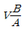
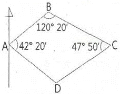
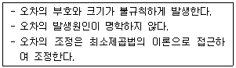
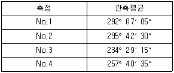
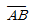
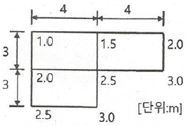
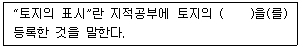

지적산업기사 (2020-08-22 기출문제)
1과목: 지적측량
1. 지적측량 시행규칙 상 지적삼각보조점측량 시 기초로 하는 점이 아닌 것은?
- 위성기준점
- 지적도근점
- 지적삼각점
- 지적삼각보조점
(정답률: 66%)

2. 다음 중 지적측량의 구분으로 옳은 것은?
- 기초측량, 세부측량
- 확정측량, 세부측량
- 기초측량, 삼각측량
- 세부측량, 삼각측량
(정답률: 87%)
3. 그림과 같은 트래버스에서

이 52° 40‘일 때, BC의 방위각은?
- 67° 40’
- 112° 20‘
- 202° 20’
- 292° 20‘
(정답률: 74%)
4. 평판측량으로 지적세부측량 시 측량준비 파일의 작성에 포함되지 않는 것은?
- 도곽선 수치
- 경계점간 거리
- 대상토지의 경계선
- 지적기준점간 거리
(정답률: 42%)
5. 도로의 분할측량을 평판측량방법으로 시행할 경우에 가장 알맞은 보조점의 측정방식은?
- 교회법
- 도선법
- 방사법
- 비례법
(정답률: 50%)
6. 행정구역선의 제도 방법에 대한 설명으로 옳은 것은?
- 시·군의 행정구역선은 0.2mm의 폭으로 제도한다.
- 동·리의 행정구역선은 0.1mm의 폭으로 제도한다.
- 행정구역선은 경계에서 약간 띄어서 그 외부에 제도한다.
- 행정구역선이 2종 이상 겹치는 경우에는 약간 띄어서 모두 제도한다.
(정답률: 48%)
7. 경위의측량방법에 따른 지적삼각점의 관측과 계산의 기준에 대한 설명으로 옳은 것은?
- 1방향각의 수평각 측각공차는 30초 이내이다.
- 수평각 관측은 2대회의 방향관측법에 의한다.
- 관측은 5초독(秒讀) 이상의 경위의를 사용한다.
- 수평각 관측 시 윤곽도는 0도, 60도, 100도로 한다.
(정답률: 54%)
8. 평판측량방법에 따른 세부측량을 실시할 때 지상경계선과 도상경계선의 부합 여부를 확인하는 방법은?
- 교회법
- 도선법
- 방사법
- 현형법
(정답률: 49%)
9. 경위의측량방법에 따른 세부측량의 관측 및 계산 방법으로 옳은 것은?
- 교회법·지거법
- 도선법·방사법
- 방사법·교회법
- 지거법·도선법
(정답률: 69%)
10. 등록전환 시 임야대장상 말소면적과 토지대장상 등록면적과의 허용오차 산출식은? (단, M은 임야도의 축척분모, F는 등록전환될 면적이다.)
- A=0.026MF
- A=0.0262MF
- A=0.026M√F
- A=0.0262M√F
(정답률: 81%)
11. 오차의 종류 중 아래와 같은 특징을 갖는 것은?

- 정오차
- 과대오차
- 우연오차
- 허용오차
(정답률: 83%)
12. 기지점 A를 측점으로 하고 전방교회법으로 다른 기지에 의하여 평판을 표정하는 측량 방법은?
- 방향선법
- 원호교회법
- 측방교회법
- 후방교회법
(정답률: 69%)
13. 폐각다각형의 외각을 각각 측정하여 다음 결과를 얻었을 때 측각오차는?

- - 15“
- + 15”
- - 35“
- + 35”
(정답률: 46%)
14. 지적기준점표지의 설치·관리 및 지적기준점성과의 관리 등에 관한 설명으로 옳은 것은?
- 지적기준점표지의 설치권자는 국토지리정보원장이다.
- 지적도근점표지의 관리는 토지소유자가 하여야 한다.
- 지적삼각보조점성과는 지적소관청이 관리하여야 한다.
- 지적소관청은 지적삼각점성과가 다르게 된 때에는 그 내용을 국토교통부장관에게 통보하여야 한다.
(정답률: 75%)
15. 경위의측량방법에 따른 세부측량의 관측 및 계산 기준으로 옳은 것은?
- 교회법 또는 도선법에 따른다.
- 관측은 30 초독 이상의 경위의를 사용한다.
- 수평각의 관측은 1 대회의 방향관측법에 따른다.
- 연직각의 관측은 정반으로 2회 관측하여 그 교차가 5분 이내인 때에는 그 평균치로 한다.
(정답률: 40%)
16. 교회법에 따른 지적삼각보조점측량에 관한 설명으로 옳지 않은 것은?
- 3방향의 교회에 따른다.
- 수평각 관측은 2대회의 방향관측법에 따른다.
- 관측은 20초독 이상의 경위의를 사용한다.
- 삼각형의 각 내각은 30도 이상 150도 이하로 한다.
(정답률: 52%)
17. 지적도근점표지의 점간거리는 평균 얼마 이하로 하여야 하는가? (단, 다각망도선법에 따르는 경우)
- 50m
- 100m
- 300m
- 500m
(정답률: 59%)
18. 평판측량방법에 따라 측정한 경사거리가 30m, 앨리데이드의 경사분획이 +15이었다면 수평거리는?
- 28.0m
- 29.7m
- 30.6m
- 31.6m
(정답률: 54%)
19. 상한과 종·횡선차의 부호에 대한 설명으로 옳은 것은? (단, △x:종선차, △y:횡선차)
- 1상한에서 △x는 (-), △y는 (+)이다.
- 2상한에서 △x는 (+), △y는 (-)이다.
- 3상한에서 △x는 (-), △y는 (-)이다.
- 4상한에서 △x는 (+), △y는 (+)이다.
(정답률: 79%)
20. 지적측량의 측량검사기간 기준으로 옳은 것은? (단, 지적기준점을 설치하여 측량검사를 하는 경우는 고려하지 않는다.)
- 4일
- 5일
- 6일
- 7일
(정답률: 51%)
2과목: 응용측량
21. 상호표정이 끝났을 때 사진모델과 실제지형모델의 관계로 옳은 것은?
- 상사
- 대칭
- 합동
- 일치
(정답률: 66%)
22. 폭이 100m이고 양안(兩岸)의 고저차가 1m인 하천을 횡단하여 수준측량을 실시하는 방법으로 가장 적합한 것은?
- 시거측량으로 구한다.
- 교호수준측량으로 구한다.
- 기압수준측량으로 구한다.
- 양안의 수면으로부터의 높이로 구한다.
(정답률: 71%)
23. 수직 터널에서 지하와 지상을 연결하는 측량은 수직 터널 추선 측량에 의한 방법으로 한다. 한 개의 수직 터널로 연결할 경우에 대한 설명으로 옳지 않은 것은?
- 수직 터널은 통풍이 잘되게 하여 추선의 흔들림을 일정량 이상 유지하여야 한다.
- 수직 터널 밑에 물이나 기름을 담은 물통을 설치하고 그 속에 추를 넣어 진동하는 것을 방지한다.
- 깊은 수직 터널에서는 피아노선으로 하되 추의 중량을 50~60kg으로 한다.
- 얕은 수직 터널에서는 보통철선, 황동선, 동선을 이용하고 추의 중량은 5kg이하로 할 수 있다.
(정답률: 60%)
24. GNSS의 구성요소에 해당되지 않는 것은?
- 우주부분(space segment)
- 관리부분(manage segment)
- 제어부분(control segment)
- 사용자부분(user segment)
(정답률: 59%)
25. 수준측량에서 우리나라가 채택하고 있는 기준면으로 옳은 것은?
- 평균고조면
- 평균해수면
- 최저조위면
- 최고조위면
(정답률: 71%)
26. 항공사진측량의 3차원 항공삼각측량 방법 중에서 공선 조건식을 이용하는 해석법은?
- 블럭조정법
- 에어로 폴리곤법
- 번들조정법
- 독립모델법
(정답률: 57%)
27. 완화곡선의 성질에 대한 설명 중 틀린 것은?
- 완화곡선의 반지름은 시점에서 무한대이다.
- 완화곡선은 시점에서는 직선에 접하고 종점에서는 원호에 접한다.
- 완화곡선에 연한 곡선 반지름의 감소율은 캔트의 증가율과 같다.
- 완화곡선 시점의 캔트는 원곡선의 캔트와 같다.
(정답률: 54%)
28. 축척 1:25000 지형도상의 표고 368m인 A점과 표고 282m인 B점 사이의 주곡선 간격의 등고선 개수는?
- 3개
- 4개
- 7개
- 8개
(정답률: 54%)
29. GPS 측량을 위해 위성에서 발사하는 신호가 아닌 것은?
- SA(selective availability)
- 반송파(carrier)
- C/A-코드
- P-코드
(정답률: 58%)
30. 수치사진측량에서 수치영상을 취득하는 방법과 거리가 먼 것은?
- 항공사진 디지타이징
- 디지털센서의 이용
- 항공사진필름 제작
- 항공사진 스캐닝
(정답률: 57%)
31. 등고선의 성질에 대한 설명으로 틀린 것은?
- 높이가 다른 등고선은 서로 교차하거나 만나지 않는다.
- 동일한 등고선 상의 모든 점의 높이는 같다.
- 등고선은 반드시 폐합하는 폐곡선이다.
- 등고선과 분수선은 직각으로 교차한다.
(정답률: 63%)
32. 지형측량에서의 지형의 표현에 대한 설명으로 틀린 것은?
- 지모의 골격이 되는 선을 지성선이라 한다.
- 경사변환선은 물이 흐르는 방향을 의미한다.
- 등고선과 지성선은 매우 밀접한 관계에 있다.
- 능선은 빗물이 이 선을 경계로 좌우로 흘러 분수선이라고도 한다.
(정답률: 50%)
33. 클로소이드에 관한 설명으로 옳지 않은 것은? (단, A:클로소이드의 매개변수)
- 클로소이드는 매개변수(A)가 변함에 따라 형태는 변하나 크기는 변하지 않는다.
- 클로소이드는 나선의 일종이다.
- 클로소이드의 매개변수(A)는 길이 단위를 갖는다.
- 클로소이드의 결정을 위해 단위클로소이드에 A배할 때, 길이의 단위가 없는 요소는 A배 하지 않는다.
(정답률: 45%)
34. 캔트(cant)의 크기가 C인 원곡선에서 곡선반지름만을 2배 증가시켰을 때, 캔트의 크기는?
- 4C
- 2C
- 0.5C
- 0.25C
(정답률: 49%)
35. 노선 측량에서 곡선시점에 대한 접선 길이가 80m, 교각이 60°일 때 원곡선의 곡선 길이는?
- 41.60m
- 95.91m
- 145.10m
- 150.374m
(정답률: 46%)
36. 초점거리가 153mm인 카메라로 축척 1:37000의 항공사진을 촬영하기 위한 촬영고도는?
- 2418m
- 3700m
- 5061m
- 5661m
(정답률: 50%)
37. 측량장비에 사용되는 기포관의 구비조건으로 옳지 않은 것은?
- 기포의 움직임이 적당히 민감해야 한다.
- 유리관이 변질되지 않아야 한다.
- 액체의 점성 및 표면장력이 커야 한다.
- 관의 곡률이 일정하고, 내면이 매끈해야 한다.
(정답률: 66%)
38. GNSS 측량 시 의사거리(pseudo-range)에 영향을 주는 오차와 거리가 먼 것은?
- 위성시계의 오차
- 위성궤도의 오차
- 전리층의 굴절 오차
- 지오이드의 변화 오차
(정답률: 65%)
39. 터널 양쪽입구에 위치한 점 A, B의 평면 직각좌표(X,Y)가 각각(827.48m, 327.56m), B(263.27m, 724.35m)일 때 이 두점을 연결하는 터널 중심선

의 방위각은?- 144° 52‘ 57“
- 125° 07’ 03”
- 54° 52‘ 57“
- 35° 07’ 03”
(정답률: 38%)
40. 어느 지역의 지반고를 측량한 결과가 그림과 같을 때 토공량은?

- 52.5m3
- 62.0m3
- 72.5m3
- 78.0m3
(정답률: 35%)
3과목: 토지정보체계론
41. 지적도면 수치파일 작업에 대한 설명으로 옳은 것은?
- 벡터라이징 작업 시 선의 굵기를 0.2mm로 지정
- 벡터라이징은 반드시 수동으로 작업하며, 자동작업 금지
- 작업수행기관에서는 작업과정에서 생성되는 파일을 3년간 보관 후 지적소관청과 협의하여 폐기
- 검사자는 최종성과물과 도면을 육안대조하여 필지경계선에 0.2mm 이상의 편차가 있으면 재작업
(정답률: 47%)
42. 토지기록 전산화 사업의 목적으로 옳지 않은 것은?
- 지적 관련 민원의 신속한 처리
- 신속한 토지소유자의 현황 파악
- 전산화를 통한 중앙 통제권 강화
- 토지관련 정책 자료의 다목적 활용
(정답률: 70%)
43. 도형정보에 위상을 부여할 경우 기대할 수 잇는 특성이 아닌 것은?
- 저장용량을 절약할 수 있다.
- 저장된 위상정보는 빠르고 용이하게 분석할 수 있다.
- 입력된 도형정보는 위상과 관련되는 정보를 정리하여 공간 DB에 저장하여 둔다.
- 공간적인 관계를 구현하는데 필요한 처리시간을 최대한 단축시킬 수 있다.
(정답률: 58%)
44. KLIS와 관련이 없는 것은?
- 고딕, SDE, ZEUS
- 지적도면수치파일화
- 3계층 클라이언트/서버 아키텍처
- PBLIS와 LMIS를 하나의 시스템으로 통합
(정답률: 43%)
45. 지적도에서 일필지의 경계를 디지타이저로 독취한 자료는?
- 벡터데이터
- 속성데이터
- 픽셀데이터
- 래스터데이터
(정답률: 65%)
46. 지적정보관리체계에서 사용자 비밀번호의 기준으로 옳은 것은?
- 사용자가 3자리부터 6자리까지의 범위에서 정하여 사용한다.
- 사용자가 6자리부터 16자리까지의 범위에서 정하여 사용한다.
- 사용자가 영문을 포함하여 4자리부터 8자리까지의 범위에서 정하여 사용한다.
- 사용자가 영문을 포함하여 5자리부터 10자리까지의 범위에서 정하여 사용한다.
(정답률: 60%)
47. 레스터 자료와 비교하여 벡터 자료가 갖는 특성으로 틀린 것은?
- 위상관계를 나타낼 수 있다.
- 복잡한 자료를 최소한의 공간에 저장시킬 수 있다.
- 공간 연산이 상대적으로 어렵고 시간이 많이 소요된다.
- 래스터 자료에 비해서 시뮬레이션 작업을 손쉽게 생성할 수 있다.
(정답률: 52%)
48. 필지중심토지정보시스템(PBLIS)에 관한 설명으로 옳은 것은?
- PBLIS를 구축한 후 연계업무를 위해 지적도 전산화 사업을 추진하였다.
- 필지식별자는 각 필지에 부여되어야 하고 필지의 변동이 있을 경우에는 언제나 변경, 정리가 용이해야 한다.
- PBLIS는 지형도를 기반으로 각종 행정업무를 수행하고 관련 부처 및 타 기관에 제공할 정책정보를 생산하는 시스템이다.
- PBLIS의 자료는 속성정보만으로 구성되며, 속성정보에는 과세대장, 상수도대장, 도로대장, 주민등록, 공시지가, 건물대장, 등기부, 토지대장 등이 포함된다.
(정답률: 53%)
49. 자료교환을 위한 소프트웨어를 만드는데 기본계획이 필요하고 이를 위한 세 가지의 처리방안이 있다. 다음 중 여기에 속하지 않는 것은?
- 직접적인 변환
- 스위치 야드 변환
- 중립형식을 이용한 이동
- 내부 표준을 기본으로 한 이동
(정답률: 47%)
50. DXF 파일의 저장 형식은?
- OGIS
- SPARC
- ASCII
- KSC-5601
(정답률: 70%)
51. 토지정보체계의 데이터 모델 생성과 관련된 개체(entity)와 객체(object)에 대한 설명으로 틀린 것은?
- 객체는 컴퓨터에 입력된 이후 개체로 불린다.
- 개체는 서로 다른 개체들과의 관계성을 가지고 구성된다.
- 개체는 데이터 모델을 이용하여 보다 정량적인 정보를 갖게 된다.
- 객체는 도형과 속성정보 이외에도 위상정보를 갖게 된다.
(정답률: 55%)
52. 벡터데이터의 기본요소로 보기 어려운 것은?
- 점(point)
- 선(line)
- 행렬(matrix)
- 폴리곤(polygon)
(정답률: 72%)
53. 공간상에 알려진 표고값이나 속성값을 이용하여 표고나 속성값이 알려지지 않은 지점에 대한 값을 추정하는 것을 무엇이라 하는가?
- 일반화
- 동형화
- 공간보간
- 지역분석
(정답률: 60%)
54. ISO/TC211에 대한 설명으로 틀린 것은?
- 지리정보 분야의 유일한 국제표준화 기구이다.
- 조직은 총 5개의 기술실무위원회로 이우러져 있다.
- 주로 공공기관과 민간기관들로 구성되어 있다.
- 정식 명칭으로 Geographic Information/Geomatics를 사용하고 있다.
(정답률: 50%)
55. 지적소관청이 지번변경, 행정구역변경, 구획정리, 경지정리, 축척변경, 토지개발사업을 하고자 하는 때에 생성하여야 하는 것은?
- 임시파일
- 정시파일
- 지적파일
- 토지파일
(정답률: 45%)
56. 특정 공간데이터를 중심으로 특정한 폭을 가지는 구역에 무엇이 존재하는가를 분석하는 방법은?
- 버퍼분석
- 통계분석
- 네트워크분석
- 불규칙삼각망분석
(정답률: 57%)
57. 파일처리시스템에 비해 데이터베이스관리시스템(DBMS)이 갖는 장점이 아닌 것은?
- 중앙 제어 가능
- 시스템의 간단성
- 데이터 공유 가능
- 데이터의 중복 제거
(정답률: 57%)
58. 정보에 대한 설명으로 옳은 것은?
- 어떤 사실의 집합
- 정보 그 자체로는 의미가 없음
- 있는 그대로의 현상 또는 그것을 숫자로 표현해 놓은 것
- 특정 목적을 달성하도록 데이터를 일정한 형태로 처리·가공한 결과
(정답률: 60%)
59. 지방자치단체가 도형정보와 속성정보인 지적공부 및 부동산종합공부 정보를 전자적으로 관리·운영하는 시스템은?
- 국토정보시스템
- 국가공간정보시스템
- 한국토지정보시스템
- 부동산종합공부시스템
(정답률: 57%)
60. 메타데이터의 기본적인 요소가 아닌 것은?
- 공간참조
- 자료의 내용
- 정보 획득 방법
- 공간자료의 구성
(정답률: 48%)
4과목: 지적학
61. 왕이나 왕족의 사냥터 보호, 군사훈련지역 등 일정한 지역을 보호할 목적으로 자연암석·나무·비석 등에 경계를 표시하여 세운 것은?
- 금표(禁標)
- 사표(四標)
- 이정표(里程標)
- 장생표(長牲標)
(정답률: 62%)
62. 지적제도가 공시제도로서 가장 중요한 기능이라 할 수 있는 것은?
- 토지 거래의 기준
- 토지 등기의 기초
- 토지 과세의 기준
- 토지 평가의 기초
(정답률: 52%)
63. 세지적(稅地籍)에 대한 설명으로 옳지 않은 것은?
- 면적본위로 운영되는 지적제도다.
- 과세자료로 이용하기 위한 목적의 지적제도다.
- 토지 관련 자료의 최신 정보 제공 기능을 갖고 있다.
- 가장 오랜 역사를 가지고 있는 최초의 지적제도다.
(정답률: 70%)
64. 토지의 표시사항 중 면적을 결정하기 위하여 먼저 결정되어야 할 사항은?
- 경계
- 지목
- 지번
- 토지소재
(정답률: 71%)
65. 토지조사사업 당시 토지에 대한 사정(査定)사항은?
- 경계
- 면적
- 지목
- 지번
(정답률: 58%)
66. 다음 중 등록방법에 따른 지적의 분류에 해당하는 것은?
- 법지적
- 입체지적
- 수치지적
- 적극적 지적
(정답률: 33%)
67. 토지의 지리적 위치의 고정성과 개별성을 확보하고 필지의 개별적 구분을 해 주는 토지 표시 사항은?
- 면적
- 지목
- 지번
- 소유자
(정답률: 73%)
68. 토지검사에 해당하지 않는 것은?
- 지압 조사
- 측량 확인
- 토지 조사
- 이동지 검사
(정답률: 37%)
69. 토지의 성질, 즉 지질이나 토질에 따라 지목을 분류하는 것은?
- 단식지목
- 용도지목
- 지형지목
- 토성지목
(정답률: 67%)
70. 지적공부의 기능이라고 할 수 없는 것은?
- 도시계획의 기초
- 용지보상의 근거
- 토지거래의 매개체
- 소유권 변동의 공시
(정답률: 32%)
71. 지번의 진행방향에 따른 부번방식(附番方式)이 아닌 것은?
- 기우식(寄遇式)
- 사행식(蛇行式)
- 우수식(隅數式)
- 절충식(折忠式)
(정답률: 60%)
72. 간주임야도에 대한 설명으로 옳지 않은 것은?
- 간주임야도에 등록된 소유권은 국유지와 도유지였다.
- 전라북도 남원군, 진안군, 임실군 지역을 대상으로 시행되었다.
- 임야도를 작성하지 않고 1/50000 또는 1/25000 지형도에 작성되었다.
- 지리적 위치 및 형상이 고산지대로 조사측량이 곤란한 지역이 대상이었다.
(정답률: 47%)
73. 필지의 정의로 옳지 않은 것은?
- 토지소유권 객체단위를 말한다.
- 국가의 권력으로 결정하는 자연적인 토지단위이다.
- 하나의 지번이 부여되는 토지의 등록단위를 말한다.
- 지적공부에 등록하는 토지의 법륙적인 단위를 말한다.
(정답률: 70%)
74. 경계불가분의 원칙에 대한 설명으로 옳은 것은?
- 토지의 경계는 1필지에만 전속한다.
- 토지의 경계는 작은 말뚝으로 표시한다.
- 토지의 경계는 인접 토지에 공통으로 작용한다.
- 토지의 경계를 결정할 때에는 측량을 하여야 한다.
(정답률: 48%)
75. 지적공개주의의 이념과 관련이 없는 것은?
- 토지경계복원측량
- 지적공부 등본 발급
- 토지경계와 면적 결정
- 토지이동 신고 및 신청
(정답률: 36%)
76. 대나무가 집단으로 자생하는 부지의 지목으로 옳은 것은?
- 공원
- 임야
- 유원지
- 잡종지
(정답률: 65%)
77. 도해지적에 대한 설명으로 옳은 것은?
- 지적의 자동화가 용이하다.
- 지적의 정보화가 용이하다.
- 측량 성과의 정확성이 높다.
- 위치나 형태를 파악하기 쉽다.
(정답률: 63%)
78. 토지조사사업 당시의 지목 중 비과세지에 해당하는 것은?
- 전
- 임야
- 하천
- 잡종지
(정답률: 74%)
79. 다음 중 현존하는 우리나라의 지적기록으로 가장 오래된 신라시대의 자료는?
- 경국대전
- 경세유표
- 장적문서
- 해학유서
(정답률: 63%)
80. 소유권의 개념에 대하여 1789년에 ‘소유권은 신성불가침’이라고 밝힌 것은?
- 미국의 독립선언
- 영국의 산업혁명
- 프랑스의 인권선언
- 독일의 바이마르 헌법
(정답률: 62%)
5과목: 지적관계
81. 지적공부를 열람하고자 할 때 열람수수료 면제대상에 해당하지 않는 것은?
- 일반인이 측량업무와 관련하여 열람하는 경우
- 지적측량업무에 종사하는 지적측량수행자가 그 업무와 관련하여 지적공부를 열람하는 경우
- 지적측량업무에 종사하는 지적측량수행자가 그 업무와 관련하여 지적공부를 등사하기 위하여 열람하는 경우
- 국가 또는 지방자치단체가 업무수행 상 필요에 의하여 지적공부의 열람 및 등본교부를 신청하는 경우
(정답률: 66%)
82. 지적확정측량에 관한 설명으로 틀린 것은?
- 지적확정측량을 할 때에는 미리 사업계획도와 도면을 대조하여 각 필지의 위치 등을 확인 하여야 한다.
- 도시개발사업 등으로 지적확정측량을 하려는 지역에 임야도를 갖춰 두는 지역의 토지가 있는 경우에는 등록전환을 하지 아니할 수 있다.
- 지적확정측량을 하는 경우 필지별 경계점은 위성기준점, 통합기준점, 삼각점, 지적삼각점, 지적삼각보조점 및 지적도근점에 따라 측정하여야 한다.
- 도시개발사업 등에는 막대한 예산이 소요되기 때문에, 지적확정측량은 지적측량수행자중에서 전문적인 노하우를 갖춘 한국국토정보공사가 전담한다.
(정답률: 62%)
83. 지적측량업의 등록을 취소해야 하는 경우에 해당되지 않는 것은?
- 다른 사람에게 자기의 등록증을 빌려주어 측량업무를 하게 한 경우
- 영업정지기간 중에 계속하여 지적측량 영업을 한 경우
- 거짓이나 그 밖의 부정한 방법으로 지적측량업의 등록을 한 경우
- 법인의 임원 중 형의 집행유예 선고를 받고 그 유예기간이 경과된 자가 있는 경우
(정답률: 61%)
84. 다음 중 지적도의 축척에 해당하지 않는 것은?
- 1/1000
- 1/1500
- 1/3000
- 1/6000
(정답률: 65%)
85. 지적확정예정조서 작성 시 포함하는 사항으로 옳은 것은?
- 토지의 경계점간 거리
- 중앙위원회 위원의 성명과 주소
- 측량에 사용한 지적기준점의 명칭
- 토지소유자의 성명 또는 명칭 및 주소
(정답률: 38%)
86. 지적업무처리규정상 지적측량성과검사 시 세부측량의 검사항목으로 옳지 않은 것은?
- 면적측정의 정확여부
- 관측각 및 거리측정의 정확여부
- 기지점과 지상경계와의 부합여부
- 측량준비도 및 측량결과도 작성의 적정여부
(정답률: 35%)
87. 경사가 심한 토지에서 지적공부에 등록하는 면적으로 옳은 것은?
- 경사면적
- 수평면적
- 입체면적
- 표면면적
(정답률: 47%)
88. 성능검사대행자의 등록을 반드시 취소하여야하는 경우로 옳은 것은?
- 등록기준에 미달하게 된 경우
- 등록사항 변경신고를 하지 아니한 경우
- 거짓이나 부정한 방법으로 성능검사를 한 경우
- 정당한 사유 없이 성능검사를 거부하거나 기피한 경우
(정답률: 63%)
89. 공간정보의 구축 및 관리 등에 관한 법률상 “토지의 표시”의 정의가 아래와 같을 때 ( )에 들어갈 내용으로 옳지 않은 것은?

- 면적
- 지가
- 지목
- 지번
(정답률: 56%)
90. 등기관서의 등기전산정보자료 등의 증명자료 없이 토지소유자의 변경사항을 지적소관청이 직접 조사·등록할 수 있는 경우는?
- 상속으로 인하여 소유권을 변경할 때
- 신규등록할 토지의 소유자를 등록할 때
- 주식회사 또는 법인의 명칭을 변경하였을 때
- 국가에서 지방자치단체로 소유권을 변경하였을 때
(정답률: 52%)
91. 지적측량 시행규칙에서 정하고있는 지적삼각보조점성과표 및 지적도근점성과표에 기록·관리하는 사항으로 틀린 것은?
- 자오선수차
- 표지의 재질
- 도선등급 및 도선명
- 번호 및 위치의 약도
(정답률: 60%)
92. 토지의 지목을 지적도에 등록할 때 지목과 부호의 연결이 옳은 것은?
- 하천 → 하
- 과수원 → 과
- 사적지 → 적
- 공장용지 → 공
(정답률: 68%)
93. 측량을 하기 위하여 타인의 토지 등에 출입하기 위한 방법으로 옳은 것은?
- 무조건 출입하여도 관계없다.
- 권한을 표시하는 증표만 있으면 된다.
- 반드시 소유자의 허가를 받아야 한다.
- 소유자 또는 점유자에게 그 일시와 장소를 통지하고, 권한을 표시하는 증표를 제시하고 출입한다.
(정답률: 70%)
94. 지목변경 및 합병을 하여야 하는 토지가 발생하는 경우 확인·조사하여야 할 사항이 아닌 것은?
- 조사자의 의견
- 토지의 이용현황
- 관계법령의 저촉여부
- 지적측량의 적부여부
(정답률: 34%)
95. 공간정보의 구축 및 관리 등에 관한 법령상 국가지명위원회에 대한 내용으로 옳은 것은?
- 부위원장은 국토지리정보원장 및 국토정보교육원장이 된다.
- 위원장 1명과 부위원장 1명을 포함한 20명이내의 위원으로 구성한다.
- 위원장은 조항에 따라 위촉된 위원 중 공무원인 위원 중에서 호선(互選)한다.
- 위원이 심신장애로 인하여 직무를 수행할 수 없게 된 경우 해당 위원을 해촉(解囑)할 수 있다.
(정답률: 52%)
96. 중앙지적위원회는 토지등록의 업무의 개선 및 지적측량기술의 연구·개발 등의 장기계획안등의 안건이 접수된 때에는 위원회의 회의를 소집하여 안건 접수일로부터 며칠 이내에 심의·의결하고, 그 의결 결과를 지체 없이 국토교통부장관에게 송부하여야 하는가?
- 14일 이내
- 30일 이내
- 60일 이내
- 90일 이내
(정답률: 52%)
97. 지적공부의 복구자료가 아닌 것은?
- 토지이동정리 결의서 사본
- 법원의 확정판결서 정본 또는 사본
- 부동산등기부 등본 등 등기사실을 증명하는 서류
- 지적소관청이 작성하거나 발행한 지적공부의 등록내용을 증명하는 서류
(정답률: 39%)
98. 공간정보의 구축 및 관리 등에 관한 법률상 축척변경의 목적으로 옳은 것은?
- 등록 전환
- 소유권 보호
- 정밀도 제고
- 행정구역 변경
(정답률: 58%)
99. 지적재조사에 관한 특별법에 따른 조정금의 소멸시효는?
- 1년
- 3년
- 5년
- 10년
(정답률: 51%)
100. 다음 중 1필지의 경계와 면적을 정하는 지적측량은?
- 공공측량
- 기초측량
- 기본측량
- 세부측량
(정답률: 49%)